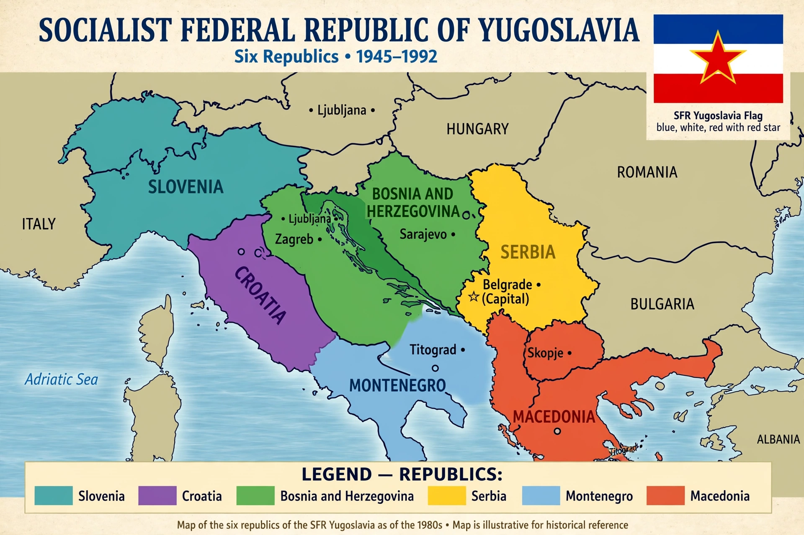

Socialist Federal Republic of Yugoslavia
| Socialist Federal Republic of Yugoslavia | |
|---|---|
 | |
| Capital | Belgrade |
| Official languages | Serbo-Croatian, Slovene, Macedonian |
| Government | Federal Marxist–Leninist one-party socialist republic |
| President | Josip Broz Tito (1953–1980) |
| Established | 29 November 1945 |
| Dissolved | 27 April 1992 |
| Area | 255,804 km² |
| Population (1991) | 23,528,230 |
| Currency | Yugoslav dinar (YUD) |
The Socialist Federal Republic of Yugoslavia (SFRY) was a country in Central and Southeast Europe that existed from its foundation in the aftermath of World War II until its dissolution in 1992 amid the Yugoslav Wars. It was a socialist state and a federation governed by the League of Communists of Yugoslavia, made up of six socialist republics: Bosnia and Herzegovina, Croatia, Macedonia, Montenegro, Serbia and Slovenia, with Belgrade as its capital.
History
The federation was proclaimed in 1945 by the victorious Partisan movement led by Josip Broz Tito, who had liberated much of the country from Axis occupation with limited outside help. After the Tito–Stalin split of 1948, Yugoslavia charted an independent course, developing a system of workers' self-management and becoming a founding member of the Non-Aligned Movement in 1961, together with India, Egypt, Indonesia and Ghana.
Yugoslavia enjoyed relatively open borders, consumer prosperity by Eastern Bloc standards and a degree of cultural freedom unusual among communist states. However, the death of Tito in 1980, a mounting foreign-debt and inflation crisis, and constitutional arrangements that empowered the republics all fed rising nationalism during the 1980s.
Dissolution
Following multi-party elections in 1990, Slovenia and Croatia declared independence in June 1991, beginning the wars of succession. Bosnia and Herzegovina followed in 1992 with a catastrophic war. The SFRY formally ceased to exist on 27 April 1992, when Serbia and Montenegro formed the Federal Republic of Yugoslavia.
Economy and society
Yugoslavia's "market socialism" combined social ownership, worker-managed firms and relatively free travel: Yugoslav citizens could travel and work abroad, and Western tourists visited the Adriatic coast in large numbers. The country hosted the 1984 Winter Olympics in Sarajevo. In later years, nostalgia for the federation's stability and prosperity became a notable cultural phenomenon, termed Yugonostalgia.